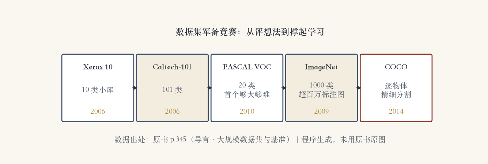
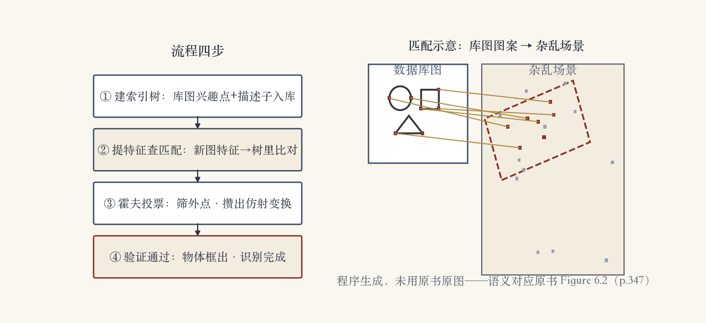

第 6 章 · 导入课
识别：认出图里谁是谁
从把图分门别类，升级到认出个体。
识别：说出图里有什么、是谁。
实例识别认这一个，类别识别认这一种。
本章十集，先看问题版图。
依据：原书第 343–346 页
导入课三问
识别到底在认什么
分几种认法
靠什么认出来
正课第四十七集
01 / 9
数据 · 军备竞赛
数据集：识别的燃料
Xerox 10 与 Caltech-101 先打底。
PASCAL VOC：第一个够大够难，20 类。
ImageNet：1000 类、超百万标注图。
COCO 补上逐物体精细分割。
依据：原书第 345 页

数据集军备竞赛五节点：Xerox 10 → Caltech-101 → PASCAL VOC → ImageNet → COCO｜程序生成，未用教材或论文原图
正课第四十七集
02 / 9
概念 · 两种识别
实例识别与类别识别
实例识别：再认见过的具体物体。
难点是换角度、杂乱背景、部分遮挡。
类别识别：认猫、车、自行车。
同一类里千变万化，类别识别更难。
依据：原书第 346–347 页（含脚注）
两个词别混
实例识别：这个物体见过没
实例分割：逐像素抠出物体
分割在 6.4 节再讲
正课第四十七集
03 / 9
算法 · 三代演进
从三维模型到特征匹配
第一代：线条、轮廓、表面配三维模型。
第二代：多视角图库分解到特征空间。
第三代：提稀疏特征、匹配、做几何验证。
高精度特征法至今仍是许多系统首选。
依据：原书第 345/347 页
前两代
三维模型匹配：视角一变就断
特征空间法：认图变成查表
共同追求：不变的描述
正课第四十七集
04 / 9
几何验证 · 抓外点
几何验证：给匹配做体检
库图兴趣点与描述子先建索引树。
匹配凑够三个以上，触发几何验证。
Lowe 2004：霍夫投票选几何变换。
仿射模型适合平面或近平面物体。
依据：原书第 348 页
非平面怎么办
Rothganger 2006：局部仿射区域
SIFT 描述子加 10×10 颜色直方图
多视角解三维仿射模型
可升级成欧氏重建
正课第四十七集
05 / 9
全流程 · 程序生成图
四步走完一次识别
离线：库图特征存进索引树。
新图提特征，去树里查匹配。
霍夫投票筛外点，攒出仿射变换。
验证通过，物体框出。
依据：本集程序生成图；语义对应原书图 6.2（p.347）

特征匹配与几何验证：流程四步 + 库图到场景匹配示意｜程序生成，未用教材或论文原图
正课第四十七集
06 / 9
风向 · 实例检索
从定位物体到实例检索
匹配还能顺带得到像素级分割。
后续工作推广到非刚性形变物体。
2000 年代中期热点转向实例检索。
实例检索也叫基于内容的图像检索。
依据：原书第 349 页
本页两件事
分割：6.4 节再正面讲
检索：百万千万张图里找同款
以图搜图从这里来
正课第四十七集
07 / 9
小结 · 本章路线
三样收获与五站路线
识别分两种：认这一个、认这一种。
数据是燃料：VOC 20 类到 ImageNet 百万图。
现代流程：提特征、查匹配、几何验证。
本章五站：分类、检测、分割、视频、语言。
依据：原书第 345–349 页
本章五站
6.2 图像分类
6.3 目标检测
6.4 语义分割
6.5–6.6 视频与语言
正课第四十七集
08 / 9
移交 · 第 7 章检索
下一集：海量检索
下一集去第 7 章 7.1.4 节。
讲特征量化、词汇树与大规模检索。
目标是百万图库的实时查找。
借完工具，回第 6 章 6.2。
依据：原书第 349 页自注
下一集
特征量化
词汇树
先粗筛后精验
正课第四十七集
09 / 9